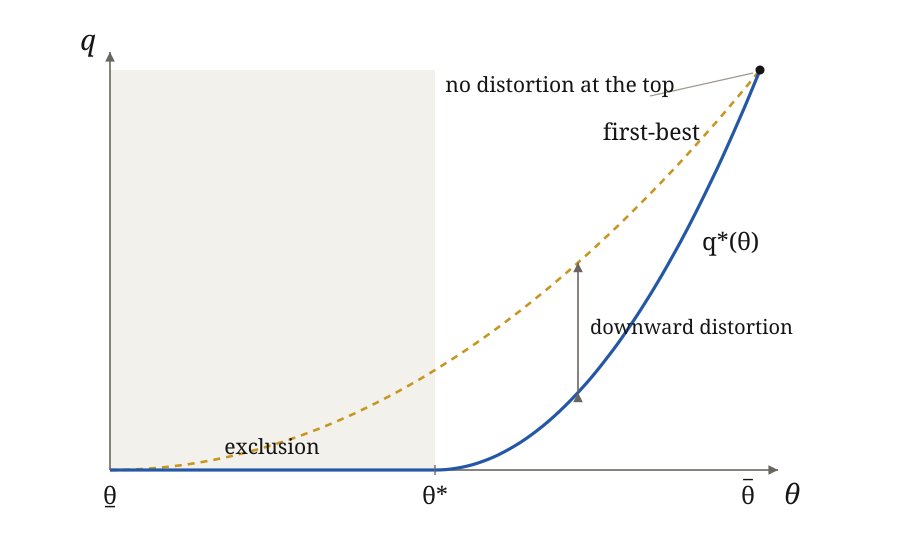
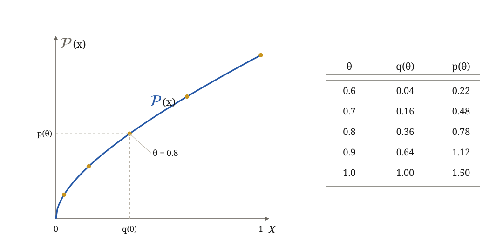
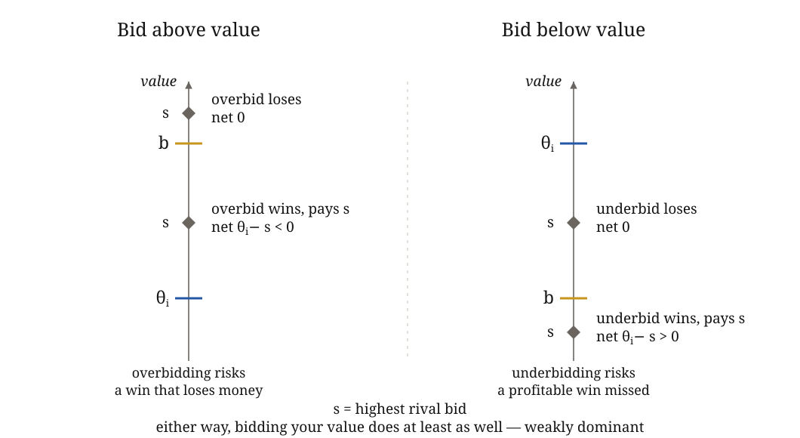

<!doctype html>
<html lang="en">
<head>
  <meta charset="utf-8">
  <meta name="viewport" content="width=device-width, initial-scale=1">
  <title>Day 2 — Mechanism Design</title>
  <link rel="preconnect" href="https://fonts.googleapis.com">
  <link rel="preconnect" href="https://fonts.gstatic.com" crossorigin>
  <link href="https://fonts.googleapis.com/css2?family=EB+Garamond:ital,wght@0,400;0,700;1,400&display=swap" rel="stylesheet">
  <link rel="stylesheet" href="https://cdn.jsdelivr.net/npm/reveal.js@5/dist/reveal.css">
  <link rel="stylesheet" href="../../engine/css/theme.css?v=20260624e">
</head>
<body>
  <div class="reveal">
    <div class="slides"
         data-markdown="slides_day2.md"
         data-asset-base="../../engine/assets/images/"></div>
  </div>

  <script type="text/markdown" id="deck-markdown">
# Mechanism Design

Sameer Mehta | ERIM Summer School 2026 | Day 2

## Nonlinear pricing

### Setup
- seller offers an infinitely divisible good (e.g. beverage, sugar); more commonly studied
- analysis introduces additional arguments and techniques that reappear later
^^^
- linear production cost: quantity $q \rightarrow$ costs $c \cdot q$; $c \geq 0$; for digital goods: $c = 0$
- seller wants to maximize profit
^^^
- buyer utility: if buyer purchases $q$ quantity and pays $p$, then her net utility is  $\theta \cdot v(q) - p$
- structure on $v(\cdot)$
	- $v(0) = 0$, twice differentiable, strictly increasing and concave: $v'(q) > 0, v''(q) < 0$ for all $q \geq 0$
	- concavity $\rightarrow$ diminishing marginal value: each extra unit is worth a little less
- type $\theta$: how much the buyer values the good

### Setup
- buyer knows $\theta$ and $v(\cdot)$
- seller does not know $\theta$ but knows $v(\cdot)$; distributional information of $\theta$: $F, f$

^^^

- assume $\overline{\theta} \cdot v'(0) > c$, so there is incentive for transaction 
	- marginal value of the first tiny bit of good to the highest type buyer exceeds marginal cost
- assume $\lim_{q\rightarrow\infty}\overline{\theta} \cdot v'(q) < c$, so finite supply 
	- eventually, the marginal value falls below marginal cost
- this implies, for some $q_H^{FB}$, $\overline{\theta} \cdot v'(q_H^{FB}) = c$
	- $q_H^{FB}$: first-best quantity for the highest type
	
### What changed from the indivisible case?

-  mostly same: one buyer, private type $\theta \sim F$, quasi-linear utility, seller can commit
- one difference: the good is divisible
  - the seller no longer chooses 'whether' to sell
  - she chooses 'how much' to sell to each type

^^^

- $q$ is now a quantity in $\mathbb{R}_+$, not a probability in $[0,1]$
- most of the steps carry over

^^^

- goal: which mechanism maximizes the expected profit of the seller?
	- how to proceed?
	
	
	
### Direct mechanism

- revelation principle holds here too — restrict attention to direct mechanisms, WLOG
- a direct mechanism is a pair of functions
  - 'allocation' (quantity) $q : [\underline{\theta}, \overline{\theta}] \to \mathbb{R}_+$
  - 'payment' $p : [\underline{\theta}, \overline{\theta}] \to \mathbb{R}$
- buyer reports a type $\theta'$
  - receives quantity $q(\theta')$ and pays $p(\theta')$

### Notation and analysis
- utility of buyer with type $\theta$ reporting $\theta'$

$$u(\theta'; \theta) := \theta \cdot v(q(\theta')) - p(\theta')$$

^^^

- compare to day 1: $\theta \cdot q(\theta')$ becomes $\theta \cdot v(q(\theta'))$
  - type still multiplies the allocation, but now through the valuation function $v$
- IC and IR are defined exactly as before
- the structural results (monotonicity, envelope, payoff/revenue equivalence) go through along the same lines
    - same logic, just the algebra changes (verify)
           
### Characterization of IC

- Proposition 2 from day 1
>- a direct mechanism $(q,p)$ is incentive-compatible if and only if
	>- $q$ is increasing, and
	>- for every $\theta \in [\underline{\theta}, \overline{\theta}]$
> $$p(\theta) =  \theta \cdot v(q(\theta)) - \int_{\underline{\theta}}^{\theta} v(q(x))\, dx - \big(\underline{\theta} \cdot v(q(\underline{\theta}))-p(\underline{\theta})\big)$$

- same logic as the indivisible case
  - $q$ increasing: higher types must get (weakly) more
  - Envelope theorem pins down utilities (equivalently, payments), from $q$ and $p(\underline{\theta})$
- the integral $\int_{\underline{\theta}}^{\theta} v(q(x))\, dx$ is the information rent

### Pinning down the lowest type

- IR holds if and only if the lowest type's utility is non-negative: $u(\underline{\theta}) \geq 0$
- profit maximization $\Rightarrow$ the seller leaves the lowest type zero rent: $u(\underline{\theta}) = 0$

  ^^^
- suppose the lowest type gets positive rent: $u(\underline{\theta})=\varepsilon>0$
- since IC implies $u(\theta)$ is increasing, every type gets at least $\varepsilon$ utility
- the seller can raise every type's payment by $\varepsilon$ $\rightarrow$ lowers utility of all types by the same amount $\rightarrow$ so IC is unchanged
- IR still holds, but profit rises by $\varepsilon$ per buyer; hence $u(\underline{\theta})=0$

^^^
$$p(\theta) = \theta\, v(q(\theta)) - \int_{\underline{\theta}}^{\theta} v(q(x))\, dx$$


### The seller's expected profit

- if the seller chooses $q(\cdot)$, expected profit is

$$\Pi = \mathbb{E}\left[p(\theta)-c\,q(\theta)\right] =  \int_{\underline{\theta}}^{\overline{\theta}} \Big[\, \theta\, v(q(\theta)) - \int_{\underline{\theta}}^{\theta} v(q(x))\, dx - c\, q(\theta) \Big] f(\theta)\, d\theta$$
- type $\theta$'s payment depends on the quantities given to all types below it

^^^

- swapping the order of integration 

$$\int_{\underline{\theta}}^{\overline{\theta}} \!\! \int_{\underline{\theta}}^{\theta} v(q(x))\, dx\, f(\theta)\, d\theta = \int_{\underline{\theta}}^{\overline{\theta}} \!\! \int_{x}^{\overline{\theta}} v(q(x))\, f(\theta)\, d\theta\, dx$$

- simplifies to: $\int_{\underline{\theta}}^{\overline{\theta}} v(q(x))\, (1 - F(x))\, dx$

### Virtual type

- substitute back and rearrange into a single expectation over $\theta$

$$\Pi = \int_{\underline{\theta}}^{\overline{\theta}} \Big[\, v(q(\theta)) \Big(\theta - \frac{1 - F(\theta)}{f(\theta)}\Big) - c\, q(\theta) \Big] f(\theta)\, d\theta$$

^^^

- maximize type by type (pointwise)
  - the true type $\theta$ is replaced by the 'virtual type': $\left(\theta - \dfrac{1 - F(\theta)}{f(\theta)}\right)$

### Virtual type

- private information $\theta$
  - need to give information rent to the buyer to incentivize truth-telling
- so, profit-maximization $\rightarrow$ maximizing 'virtual surplus'

### Pointwise maximization

- ignore the monotonicity constraint for a moment and pick $q(\theta)$ for each $\theta$ separately
- first-order condition (interior)

$$v'(q(\theta)) \Big(\theta - \frac{1 - F(\theta)}{f(\theta)}\Big) = c$$

- marginal value (scaled by the virtual type) $=$ marginal cost

### When is the quantity zero?

- if the virtual type is non-positive

$$\theta - \frac{1 - F(\theta)}{f(\theta)} \le 0 \quad\Rightarrow\quad q^{\ast}(\theta) = 0$$

- marginal value of serving this type is negative -- so, don't serve
- even with positive virtual type, if the value from serving very first unit does not exceed cost:
$$v'(0)\Big(\theta - \frac{1 - F(\theta)}{f(\theta)}\Big) \le c \quad\Rightarrow\quad q^{\ast}(\theta) = 0$$

- otherwise, unique interior solution to the FOC

### Making sure $q$ is increasing

- we solved type-by-type and dropped monotonicity 
- assumption (regularity): the virtual type $\theta - \dfrac{1 - F(\theta)}{f(\theta)}$ is increasing in $\theta$
  - then the left side of the FOC rises with $\theta$, so the optimal $q$ rises with $\theta$ — monotonicity holds for free

### Optimal mechanism

- suppose $F$ is regular. A profit-maximizing $q$ is:
  - if $v'(0)\big(\theta - \tfrac{1 - F(\theta)}{f(\theta)}\big) \le c$, then $q^{\ast}(\theta) = 0$
  - otherwise $q^{\ast}(\theta)$ solves $\; v'(q(\theta))\big(\theta - \tfrac{1 - F(\theta)}{f(\theta)}\big) = c$
- the payment follows from the characterization

$$p^{\ast}(\theta) = \theta\, v(q^{\ast}(\theta)) - \int_{\underline{\theta}}^{\theta} v(q^{\ast}(x))\, dx$$

### Highest type: no distortion

- what is the virtual type of the highest type?

^^^

$$
\overline{\theta}-\frac{1-F(\overline{\theta})}{f(\overline{\theta})}
=
\overline{\theta}
$$

^^^

- thus, the highest type's quantity solves

$$
v'(q(\overline{\theta}))\,\overline{\theta}=c
$$

- this is exactly the first-best allocation: marginal value equals marginal cost

- lower types' quantities are distorted downward to make it less attractive to higher types, preventing higher types from mimicking them

- the highest type receives the first-best quantity; no distortion

### Optimal quantity: exclusion and distortion



### Implementation in practice

-  we derived the optimal mechanism as a direct mechanism
  - the buyer reports her type $\theta$, then receives $q(\theta)$ and pays $p(\theta)$
^^^
- asking an agent to report a type can be demanding
  - the type is private, abstract, and hard to articulate
  - reporting a number for $\theta$ is not how real transactions work
^^^
- in practice we seek mechanisms that are simple to operationalize
  - a posted price, a menu, a tariff, a familiar auction format
^^^
- depending on the context, the direct mechanism can be transformed into such a format
  - the allocation and payments are unchanged
  - the agent makes a familiar choice, and the choice reveals the type

### Implementation as tariff / price-quantity schedule

- the direct mechanism asks the buyer to report a type $\theta$
- after the report, the buyer receives $q(\theta)$ and pays $p(\theta)$

$$
\theta \mapsto \big(q(\theta),p(\theta)\big)
$$

^^^

- equivalently, the seller can post the same choices as a menu of price-quantity pairs

$$
\big\{(q(\theta),p(\theta)):\theta\in[\underline{\theta},\overline{\theta}]\big\}
$$

^^^

- this menu can be written as a tariff / price-quantity schedule $\mathcal P(q)$: $\mathcal P(q(\theta))=p(\theta)$

- equivalently, for any quantity $x$ on the menu: $\mathcal P(x)=p(q^{-1}(x))$

- choosing a quantity from the tariff replaces reporting a type
  - each type chooses exactly the quantity intended for it

### Constructing the tariff



### Quantity discounts

- the resulting tariff is nonlinear: total payment does not rise at a constant per-unit price
- larger quantities 'often' have a lower average price

$$
\frac{\mathcal P(q)}{q}
$$

- this is the well-known quantity discount: buy more, pay less per unit

- quantity discounts help screen buyers with different hidden valuations

## Auctions

### Auctions 

- many real allocations are run as auctions
  - art and collectibles
  - spectrum licenses, treasury bonds
  - online advertising slots
  - procurement and contracting
^^^
- why auction instead of posting a price?
^^^
  - the seller does not know how much buyers value the good
  - several buyers compete for one good
  - an auction lets competition reveal the values and set the price

### From one buyer to many

- borrow the indivisible-good setup from day 1
  - one seller, one indivisible good
  - a buyer of type $\theta$ values the good at $\theta$, private information

^^^
- now there are $n$ buyers (bidders), indexed by $i = 1, \dots, n$
- each bidder has a private value $\theta_i$
- values are drawn independently from the same $F$ on $[\underline{\theta}, \overline{\theta}]$, with density $f$
- utility is quasi-linear: a winner who pays $p$ gets $\theta_i - p$
- bidders are risk-neutral

### Auctions as mechanisms

- an auction is just a mechanism
  - each bidder submits a bid $b_i$ (the message)
  - an allocation rule picks the winner from the bids
  - a payment rule says what each bidder pays
^^^
- note: bids are actions, not necessarily types; this is an indirect mechanism
- the revelation principle from day 1 still applies
  - any equilibrium outcome can be replicated by a truthful direct mechanism
  - but let us not jump to direct mechanisms, yet
^^^
- let's study two classic auction formats
  - second-price (sealed-bid)
  - first-price (sealed-bid)

## Second-price auction

### Second-price auction: the rules

- each bidder submits a sealed bid $b_i$ (how much they value the good)
- the highest bidder wins the good
- the winner pays the second-highest bid; everyone else pays nothing
- bids: $\{2, 6, 3, 7, 9, 5\}$
	- winning bid: 9
	- payment: 7
- the price a winner pays is set by the others, not by her own bid

### Second-price auction: how to bid?

- fix bidder $i$, value $\theta_i$, and let $s = \max_{j \neq i} b_j$ be the highest competing bid
- given $s$, bidder $i$ wins if and only if $b_i > s$, and then pays $s$
- how much should bidder $i$ bid?

^^^

- claim: bidding $b_i = \theta_i$ is optimal, whatever the others do

### Second-price auction: optimal bidding strategy

- compare truthful bidding $\theta_i$ with a deviation $b$, holding $s$ fixed

^^^
- overbid, $b > \theta_i$: changes the outcome only when $\theta_i < s < b$
  - the overbid wins, but pays $s > \theta_i$: net $\theta_i - s < 0$
  - truthful would have lost, net $0$
  - overbidding risks a win that loses money
^^^
- underbid, $b < \theta_i$: changes the outcome only when $b < s < \theta_i$
  - the underbid loses, net $0$
  - truthful would have won, paying $s < \theta_i$: net $\theta_i - s > 0$
  - underbidding risks a profitable win missed

^^^
- either way the deviation does no better; bidding true value is weakly dominant

### Second-price auction: why bidding your value is optimal



### Second-price auction: equilibrium concept

- truth-telling is best regardless of the others' bids
- this is a weakly dominant strategy: optimal no matter what rivals do

^^^
- two notions of equilibrium
  - dominant strategy: optimal against every possible play of the rivals
  - Bayesian Nash: optimal in expectation, given that rivals follow their equilibrium strategies and given the belief $F$ about their values
^^^
- a dominant-strategy equilibrium is the stronger notion
  - it needs no beliefs about $F$ and no assumption that rivals play well
  - the second-price auction has one: each bidder simply bids her value

### Second-price auction: efficiency

- an allocation is efficient if the good goes to the bidder who values it most
  - this is the allocation that maximizes total surplus (buyer + seller)
^^^
- in the second-price auction every bidder bids her value
- the highest bid is then the highest value, so the highest-value bidder wins
- the second-price auction is efficient

### Second-price auction as a direct mechanism

- recall: an auction is an indirect mechanism
	- bidders submit bids $b_i$, which are actions, not types
	- but in the second-price auction truthful bidding is dominant: $b_i = \theta_i$
^^^
- by the revelation principle, fold this equilibrium into a direct mechanism
  - each bidder is simply asked to report her value $\theta_i$
  - the seller applies the same rules to the reports
^^^
- reporting truthfully is incentive-compatible, exactly because honest bidding was optimal
- the sealed-bid format is just one convenient way to run this direct mechanism

### Second-price auction as a direct mechanism: the rules

- allocation: the good goes to the highest reported value

$$q_i(\theta_i, \boldsymbol{\theta}_{-i}) = \begin{cases} 1 & \text{if } \theta_i > \max_{j \neq i} \theta_j \\ 0 & \text{otherwise} \end{cases}$$

^^^
- payment: the winner pays the second-highest report; everyone else pays nothing

$$p_i(\theta_i, \boldsymbol{\theta}_{-i}) = \big(\max_{j \neq i} \theta_j\big)\, q_i(\theta_i, \boldsymbol{\theta}_{-i})$$

## First-price auction

### First-price auction

- each bidder submits a sealed bid $b_i$
- the highest bidder wins the good
- the winner pays her own bid
- everyone else pays nothing

^^^
- does truthful bidding work?

### First-price auction: truthful bidding fails

- suppose a bidder bids her own value, $b_i = \theta_i$
- if she wins, she pays $\theta_i$, so her net surplus is $\theta_i - \theta_i = 0$
^^^
- bidding own value gives zero surplus
- to earn a positive surplus bidders must bid below their value (shade the bid)

^^^
- this creates a trade-off
  - shade more: larger surplus when you win, but a smaller chance of winning
  - shade less: smaller surplus when you win, but a larger chance of winning
^^^
- how much to shade depends on what the rivals do

### First-price auction: symmetric equilibrium

- we look for a symmetric equilibrium
  - every bidder uses the same bid function $\sigma(\cdot)$
  - a bidder of value $\theta$ submits the bid $\sigma(\theta)$
- symmetric means one common rule $\sigma$, applied to each bidder's own value
^^^
- assume $\sigma$ is increasing
  - higher values bid more
  - so the highest value submits the highest bid and wins
- the task: find a $\sigma$ that is a best response to itself

### First-price auction: probability of winning

- suppose every rival uses $\sigma$, and bidder $i$ submits the bid $\sigma(z)$ for some value $z$
- since $\sigma$ is increasing, $i$ outbids rival $j$ exactly when $\theta_j < z$
	- $\text{Prob}(\theta_j < z) = F(z)$
	
^^^
- $i$ wins only if every rival is below $z$

$$G(z) := \text{Prob}(\,i \text{ wins}\,) = \text{Prob}\big(\theta_j < z \ \text{ for all } j \neq i\big)$$

^^^
- values are independent and identically distributed, so the probability factors

$$G(z) = \prod_{j \neq i} \text{Prob}(\theta_j < z) = F(z)^{\,n-1}$$

### First-price auction: the bidder's problem

- a bidder of value $\theta$ chooses which bid to submit

^^^
- if she wins she gets $\theta - \sigma(z)$; if she loses she gets $0$
- she wins with probability $G(z)$, so her expected surplus is

$$U(z; \theta) = \big(\theta - \sigma(z)\big)\, G(z)$$

^^^
- she chooses $z$ to maximize $U(z;\theta)$

$$\max_{z} \; \big(\theta - \sigma(z)\big)\, G(z)$$

### First-price auction: the equilibrium condition

- equilibrium means no bidder wants to deviate when everyone else uses $\sigma$
- our bidder's prescribed bid is $\sigma(\theta)$, i.e. imitating her own value
  - every alternative bid is imitating some other value $z$
  - so equilibrium requires: imitating $\theta$ beats imitating any $z$
^^^
- this is what "a best response to itself" means
  - for each type $\theta$, the best value to imitate is her own: $z = \theta$ maximizes $U(z;\theta)$
- it does not say bids are truthful: the bid is still shaded, $\sigma(\theta) < \theta$
  - $z = \theta$ is about which type to imitate, not about bidding your value
^^^
- since $z = \theta$ maximizes $U(z;\theta)$, the first-order condition holds there

$$\left.\frac{\partial U(z;\theta)}{\partial z}\right|_{z=\theta} = 0 \quad\Longrightarrow\quad -\, \sigma'(\theta)\, G(\theta) + \big(\theta - \sigma(\theta)\big)\, G'(\theta) = 0$$

- a differential equation for the unknown function $\sigma$

### First-price auction: solving the equation

- move the $\sigma$ terms together

$$\sigma'(\theta)\, G(\theta) + \sigma(\theta)\, G'(\theta) = \theta\, G'(\theta)$$

^^^
- the left side is a single derivative

$$\frac{d}{d\theta}\big[\, \sigma(\theta)\, G(\theta)\,\big] = \theta\, G'(\theta)$$

^^^
- integrate from $\underline{\theta}$ to $\theta$, using $G(\underline{\theta}) = 0$

$$\sigma(\theta)\, G(\theta) = \int_{\underline{\theta}}^{\theta} x\, G'(x)\, dx$$

^^^
- divide by $G(\theta)$ to obtain the optimal bidding strategy

$$\sigma(\theta) = \frac{1}{G(\theta)} \int_{\underline{\theta}}^{\theta} x\, G'(x)\, dx$$

### First-price auction: value minus shading

- integrate $\int_{\underline{\theta}}^{\theta} x\, G'(x)\, dx$ by parts

$$\int_{\underline{\theta}}^{\theta} x\, G'(x)\, dx = \theta\, G(\theta) - \int_{\underline{\theta}}^{\theta} G(x)\, dx$$

^^^
- divide by $G(\theta)$

$$\sigma(\theta) = \theta - \frac{\int_{\underline{\theta}}^{\theta} G(x)\, dx}{G(\theta)}$$

^^^
- so the bid is the value minus a positive shading term

$$\underbrace{\sigma(\theta)}_{\text{bid}} = \underbrace{\theta}_{\text{value}} - \underbrace{\frac{\int_{\underline{\theta}}^{\theta} G(x)\, dx}{G(\theta)}}_{\text{shading} \,>\, 0}$$

- the bidder always bids below her value

### First-price auction as a direct mechanism

- recall: the first-price auction is also an indirect mechanism
	- bidders submit shaded bids $\sigma(\theta_i) < \theta_i$, not their types

^^^
- by the revelation principle, fold the symmetric equilibrium into a direct mechanism
  - each bidder is asked to report her value $\theta_i$
  - the seller bids $\sigma(\theta_i)$ on her behalf and applies the same rules

^^^
- reporting truthfully is incentive-compatible, exactly because $\sigma$ was a best response to itself
- the shading now lives inside the mechanism, not in the bidder's problem

### First-price auction as a direct mechanism: the rules

- allocation: the good goes to the highest reported value, same as second-price

$$q_i(\theta_i, \boldsymbol{\theta}_{-i}) = \begin{cases} 1 & \text{if } \theta_i > \max_{j \neq i} \theta_j \\ 0 & \text{otherwise} \end{cases}$$

^^^
- payment: the winner pays her own shaded bid; everyone else pays nothing

$$p_i(\theta_i, \boldsymbol{\theta}_{-i}) = \sigma(\theta_i)\, q_i(\theta_i, \boldsymbol{\theta}_{-i})$$

^^^
- contrast with second-price: here the winner's payment depends only on her own report

### First-price auction: another reading of the bid

- let $Y$ be the highest value among the $n-1$ rivals
- the distribution of $Y$ is exactly $G$

$$\text{Prob}(Y < z) = \text{Prob}\big(\theta_j < z \ \text{ for all } j \neq i\big) = F(z)^{\,n-1} = G(z)$$

- so $G'$ is the density of $Y$
^^^
- read the optimal bid again, with $G(\theta) = \text{Prob}(Y < \theta)$

$$\sigma(\theta) = \frac{\int_{\underline{\theta}}^{\theta} x\, G'(x)\, dx}{G(\theta)} = \frac{\int_{\underline{\theta}}^{\theta} x\, G'(x)\, dx}{\text{Prob}(Y < \theta)}$$

^^^
- the right side is a conditional expectation

$$\sigma(\theta) = \mathbb{E}\big[\, Y \;\big|\; Y < \theta \,\big]$$

### First-price auction: interpreting the bid

$$\sigma(\theta) = \mathbb{E}\big[\, Y \mid Y < \theta \,\big], \qquad Y = \text{highest competing value}$$

- you win only when you have the highest value, that is when $Y < \theta$
- conditional on winning, $Y$ is the value of your closest competitor
- you bid the expected value of that closest competitor

^^^
- what happens as competition grows?
  - more rivals (larger $n$) make $Y$ more likely to be close to $\theta$
  - so $\mathbb{E}[Y \mid Y < \theta]$ rises toward $\theta$, and the shading shrinks
  - competition pushes bids up toward values

### First-price vs. second-price

Left: second-price
- bid your value, $\sigma(\theta) = \theta$
- dominant strategy; no beliefs needed
- price is the second-highest value 
- bidding is simple, the price looks complex

Right: first-price
- shade below value, $\sigma(\theta) < \theta$
- Bayesian Nash; depends on $F$ and $n$
- price is your own (shaded) bid
- bidding is complex, the price looks simple

### Example: uniform values

- let each $\theta_i \sim U[0,1]$, so $F(\theta) = \theta$ and $G(\theta) = \theta^{\,n-1}$
^^^
- second-price: bid the value
$$\sigma(\theta) = \theta$$

^^^
- first-price: plug $G$ into the formula
$$\sigma(\theta) = \theta - \frac{\int_{0}^{\theta} x^{\,n-1}\, dx}{\theta^{\,n-1}} = \theta - \frac{\theta^{n}/n}{\theta^{\,n-1}} = \theta - \frac{\theta}{n} = \frac{n-1}{n}\,\theta$$
- with two bidders ($n = 2$) each bids half her value

### Expected revenue

- both formats need an order statistic of the $n$ values
  - second-price: the winner pays the second-highest value
  - first-price: the winner is the highest value, say $\theta$, and pays $\sigma(\theta)$

^^^
- so we need two expectations
  - the expected highest value, $\mathbb{E}[\text{highest}]$
  - the expected second-highest value, $\mathbb{E}[\text{second-highest}]$

- compute both for $n$ independent $U[0,1]$ draws

### Expected revenue: the highest value

- let $M = \max(\theta_1, \dots, \theta_n)$, each $\theta_i \sim U[0,1]$
-  $\text{Prob}(M < t) = t^{\,n}$
- the density is the derivative: $f_M(t) = \dfrac{d}{dt}\,\text{Prob}(M < t) = n\, t^{\,n-1}$
^^^
- take the mean
$$\mathbb{E}[M] = \int_0^1 t \cdot n\, t^{\,n-1}\, dt = n \int_0^1 t^{\,n}\, dt = \frac{n}{n+1}$$

### Expected revenue: the second-highest value

- let $S$ be the second-highest of the $n$ values
- one value sits at $t$, one of the remaining is above, $n-2$ are below

$$\text{Prob}\big(S \in [t,\, t+dt]\big) = n(n-1)\, t^{\,n-2}(1 - t)\, dt \;\Rightarrow\; f_S(t) = n(n-1)\, t^{\,n-2}(1 - t)$$

^^^
- take the mean
$$\mathbb{E}[S] = \int_0^1 t \cdot n(n-1)\, t^{\,n-2}(1-t)\, dt = n(n-1)\!\int_0^1 \big(t^{\,n-1} - t^{\,n}\big)\, dt$$

^^^
- evaluate the integral
$$\mathbb{E}[S] = n(n-1)\Big(\frac{1}{n} - \frac{1}{n+1}\Big) = \frac{n-1}{n+1}$$

### Expected revenue: comparing the formats

- second-price: the winner pays the second-highest value
$$\mathbb{E}[\text{revenue}] = \mathbb{E}[S] = \frac{n-1}{n+1}$$

^^^
- first-price: the winner has the highest value $M$ and pays $\sigma(M) = \tfrac{n-1}{n}M$
$$\mathbb{E}[\text{revenue}] = \frac{n-1}{n}\,\mathbb{E}[M] = \frac{n-1}{n}\cdot\frac{n}{n+1} = \frac{n-1}{n+1}$$

^^^
- the two formats raise exactly the same expected revenue
- is this a coincidence?

### Revenue equivalence
- this is not a coincidence; recall Lemma 4 from day 1
  - for any IC mechanism, the expected payment is pinned down by the allocation rule and the lowest type's payoff
^^^
- in equilibrium each auction induces a truthful, incentive-compatible direct mechanism
  - second-price: dominant-strategy IC; first-price: Bayesian IC
  - so Lemma 4 applies to both, even though first-price bidding shades
^^^
- both induced mechanisms share the same two features
  - the good always goes to the bidder with the highest value (same allocation)
  - the lowest type wins with probability zero and pays nothing (same lowest-type payoff)
- so they must raise the same expected revenue

### Revenue equivalence

- two very different formats, two very different ways to bid
  - second-price: simple bidding, the price is set by rivals
  - first-price: subtle bidding, the price is your own

^^^
- what drives revenue is the allocation, not the format
- to change revenue, change who wins, not the payment rule

^^^
- so far both formats sell the good for sure, to the highest value
- could the seller raise revenue by sometimes not selling?

### Can the seller do better?

- the plain second-price auction is efficient, but not revenue-maximizing
- it always sells, even to a single low-value bidder, for almost nothing
^^^
- recall day 1: a monopolist refuses to sell below a threshold price
  - low types are dropped to charge high types more
- the same idea works with many bidders
- the tool is a reserve price

## Second-price auction with reserve

### Second-price auction with a reserve price

- the seller commits to a reserve price $r$ before bids arrive
- rules
  - each bidder submits a sealed bid $b_i$
  - the good is sold only if the highest bid is at least $r$
  - the winner is the highest bidder, paying $\max\{\,r,\ \text{second-highest bid}\,\}$
  - if every bid is below $r$, the good goes unsold
^^^
- the reserve acts like a phantom bidder who always bids $r$

### Reserve price: bidding is unchanged

- truthful bidding $b_i = \theta_i$ is still weakly dominant
- the earlier argument carries over, treating the reserve as one extra bid at $r$
^^^
- a bidder with value $\theta_i$ now wins only when $\theta_i \ge r$ and she beats every rival
- she never wins at a price above her value, so honest bidding is still optimal
- a bidder with $\theta_i < r$ cannot profit from winning, and stays out

### Reserve price: when does it matter?

- relative to no reserve, $r$ changes the outcome only in two events
^^^
- event A: the good still sells, but now at the reserve
  - exactly one bidder is above $r$; the price is $r$ instead of the lower second value
  - revenue rises
^^^
- event B: the good goes unsold
  - all bidders are below $r$; a sale that would have happened is lost
  - revenue falls
^^^
- the best reserve balances these two effects

### Choosing the reserve: the marginal trade-off

- raise the reserve a little, from $r$ to $r + dr$
^^^
- gain: where the good already sells at the reserve, the seller earns $dr$ more
  - this is the event that exactly one bidder is above $r$
  - pick which bidder is above ($n$ ways), it is above $r$ with prob $1 - F(r)$, the other $n-1$ are below with prob $F(r)^{\,n-1}$
  - probability $n\,\big(1 - F(r)\big)\,F(r)^{\,n-1}$
^^^
- loss: a sale is lost when the top value sits right at $r$ (and is the only one above)
  - pick which bidder is at $r$ ($n$ ways), it lands in $[r, r+dr]$ with prob $f(r)\,dr$, the other $n-1$ are below with prob $F(r)^{\,n-1}$
  - probability $n\,f(r)\,F(r)^{\,n-1}\,dr$, and the seller forgoes the price $r$

### The revenue-maximizing reserve

- set marginal gain equal to marginal loss

$$n\,\big(1 - F(r)\big)\,F(r)^{\,n-1} = r\,f(r)\,n\,F(r)^{\,n-1}$$

^^^
- the $n$ and the $F(r)^{\,n-1}$ cancel

$$1 - F(r^{\ast}) = r^{\ast} f(r^{\ast}) \quad\Longleftrightarrow\quad r^{\ast} - \frac{1 - F(r^{\ast})}{f(r^{\ast})} = 0$$

^^^
- this is $\psi(r^{\ast}) = 0$: the reserve is the type with zero virtual valuation
- it is exactly the day-1 monopoly price, the same threshold $\theta^{\ast}$


### Reserve price

- the number of bidders dropped out of the condition $\psi(r^{\ast}) = 0$
- the optimal reserve does not depend on $n$

^^^
- intuition: the reserve price bites only when there is essentially one serious bidder
  - against a lone buyer it is the monopoly price
  - extra bidders compete the price up on their own, above the reserve

### The optimal auction

- under regularity, the revenue-maximizing auction is
  - the second-price auction with reserve price $r^{\ast} = \theta^{\ast}$

^^^

- this is the multi-bidder version of day 1
  - day 1: serve the single buyer only if $\psi(\theta) \ge 0$
  - here: sell to the highest bidder only if her value clears the reserve, $\psi(r^{\ast}) = 0$
- allocate to the highest value, but withhold below the reserve

### Efficiency vs. revenue

- two different objectives

- efficiency: the good should always go to whoever values it most
  - achieved by the plain second-price auction, with no reserve
^^^
- revenue: the seller withholds the good below $r^{\ast}$ to charge high types more
  - a positive reserve sacrifices some efficient sales

### Efficiency vs. revenue: the deadweight loss

- with a reserve, the good goes unsold whenever all values are below $r^{\ast}$
  - this happens with probability $F(r^{\ast})^{\,n}$
  - a buyer who values the good is denied it: surplus is destroyed
- this is the deadweight loss

^^^
- as the market grows, the deadweight loss fades
  - $F(r^{\ast})^{\,n} \to 0$ as $n \to \infty$, so the no-sale event becomes rare
  - competition makes the revenue-maximizing auction nearly efficient
  </script>

  <script defer src="https://cdn.jsdelivr.net/npm/reveal.js@5/dist/reveal.js"></script>
  <script defer src="https://cdn.jsdelivr.net/npm/reveal.js@5/plugin/notes/notes.js"></script>
  <script defer src="https://cdn.jsdelivr.net/npm/marked@12/marked.min.js"></script>
  <script defer src="https://cdn.jsdelivr.net/npm/mermaid@10/dist/mermaid.min.js"></script>
  <script defer src="https://cdn.jsdelivr.net/npm/viz.js@2.1.2/viz.js"></script>
  <script defer src="https://cdn.jsdelivr.net/npm/viz.js@2.1.2/full.render.js"></script>
  <script defer src="../../engine/js/render.js?v=20260624e"></script>
</body>
</html>
